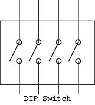
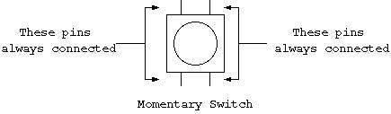
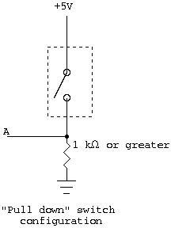

A switch works by connecting and disconnecting wires. For example, a traditional wall switch works by connecting two wires that allows current to flow through a light bulb. When the wires are connected allowing current to pass, we say the switch is "closed". When the wires are not connected, we say the switch is "open". Some people find this counterintuitive. Just remember that an open switch has an opening between two wires; therefore, no electricity flows. Connecting a switch to an IC in the intuitive way doesn't work because it would create a floating input whenever it was "open".
This document first describe the two types of switches in your kit, then explains how to correctly use them with ICs.
DIP switches work just like normal light switches: When a switch is in the "on" position, there is a path for electricity between the corresponding pins at the top and bottom of the switch. Each of the four switches connects a different pair of pins.

A momentary switch is open by default. Pressing the button closes the switch creating a connection over which electricity may flow. The pin layout of the momentary switch, however, is not completely obvious. If you flip the switch over, you will notice that it has four legs: Two sides have two legs each, and two sides have no legs. The legs across from each other on different sides of the switch are always connected. Legs next to each other, or diagonally across from each other are connected only when the switch is depressed. For the most part, you need only remember that the pins diagonally across from each other are affected by the switch. In fact, you may find that some switches have only two legs, or that two legs are folded in.


When the switch is open (i.e. the DIP switch is "off", or the
momentary switch is not depressed), there is only a path from A to
ground. Thus A has a logical value of "false". When the switch is
closed, then there is also a path from +5v to A. Because electricity
is lazy, it will choose the path from +5v to A instead of the path
from +5v to ground (thereby avoiding the work to be done in the
resistor). This gives A a logical value of "true". With
your breadbord kits, alwauys use either the 4.7 kΩ or 10 kΩ resistors with your
switch setups.
This setup can apply to both the momentary switch and the DIP switch; however, be sure that each switch has its own resistor.